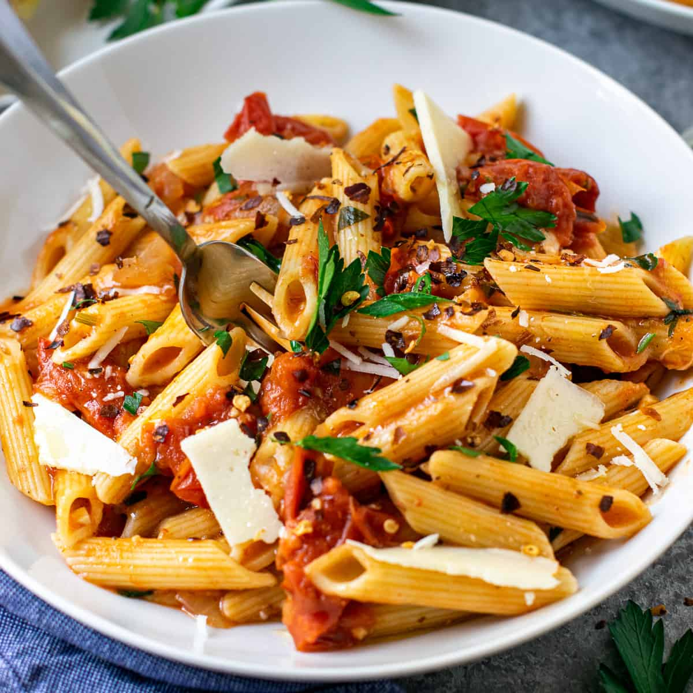

Tomato Pasta
Home

Description
A very customizable pasta dish, with your own source that can be either vegetarian or with any meat of your choice. This dish produces enough sauce for a week's worth of food which you can enjoy throughout the week of freeze for a later date.
Ingredients
- Pasta of your favorite shape
- One onion
- Three garlic cloves
- Ginger
- One pepper
- Mushrooms and any other vegetables you prefer
- One red chilly (optional)
- Two chicken breasts or meat of your choice (optional)
- A tin of tomatoes or three fresh tomatoes
- Sugar
- Seasonings: chilly powder, oregano and basil
- Mozzarella Cheese
- Oil
Steps
- Dice the onions, peppers, ginger, garlic, chilly and any other vegetables. Dice the chicken breasts if you using them
- Bring a pan of water to boil an add the pasta to the pot once the water is boiling.
- Pre heat the pan and add some oil before adding the onions and cook them until they start to soften before adding in some salt.
- If cooking a vegetarian version of this dish, skip this step. Add the chicken to the pan and cook till it starts to brown
- Then add in the garlic ginger and chilly.
- Once they have cooked a bit add in the other vegetables and sprinkle in the seasonings.
- Grate the tomatoes if you are using the fresh tomatoes, otherwise move to the next step.
- Once the vegetables are all cooked through, add in the tinned tomatoes or the fresh grated tomatoes.
- Sprinkle in some sugar and chilly powder
- Remove the pasta from boil once cooked, move to a plate and add the sauce on top with the cheese
- Eat up!